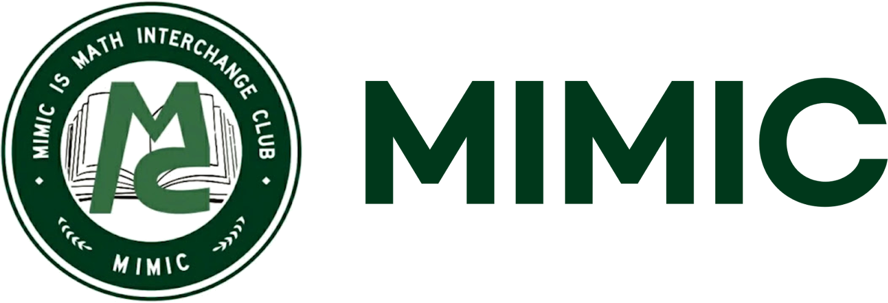

About MCUS
학부생이 서로의 관심사를
학부생이 서로의 관심사를
나눌 수 있는 학술회
MCUS(Mathematics Conference for Undergraduate Students)는 2025년부터 매년 겨울 열리는 학부생을 위한 수학 학술회입니다. 연구자의 기조 강연부터 학부생과 대학원생의 초청 강연, 포스터 세션까지 대수와 해석, 기하와 위상, 조합론과 응용수학에 이르는 폭넓은 분야의 수학을 한자리에서 만날 수 있습니다.
전공 분야가 달라도, 아직 깊이 공부해 보지 않은 주제여도 괜찮습니다. 각자 흥미를 느낀 수학을 꺼내 놓고 이야기하며, 서로의 관심사를 넓혀 가는 교류의 장을 지향합니다.
- 개최 시기
- 매년 1월, 2–3일간
- 장소
- 성균관대학교 자연과학캠퍼스 (수원)
- 대상
- 수학을 공부하는 학부생주로 3, 4학년
- 주최
- 성균관대학교 수학과 학술동아리 MIMIC
- 후원
- 성균관대학교 수학과
프로그램 구성
Program- Plenary Talk
기조 강연
교수님, 박사님 초청연구하고 있는 분야나 수학 주제를 학부생의 눈높이에서 소개합니다.
- Invited Talk
초청 강연
학부생, 대학원생 초청공부하거나 연구한 주제를 또래의 시선으로 풀어 소개합니다.
- Poster Session 2027 신설
포스터 세션
관심 주제를 포스터로 전시하고 참가자와 직접 이야기를 나눕니다. 새로운 연구 성과가 아니어도 괜찮습니다.
- Lightning Talk
라이트닝 토크
참가자 누구나 신청해, 관심 있는 주제를 짧게 발표합니다.
- Banquet
교류와 만찬
쉬는 시간과 만찬에서 연사, 참가자가 자유롭게 이야기를 나눕니다.
Hosted by

2018년 성균관대학교 수학과 학생들이 만든 학술동아리로,
세미나와 스터디를 꾸준히 이어 오고 있습니다.